AO17 CS курсы / 2-бөлім: 3D зертхана
AO17 CS курсы · 2-бөлім
Технологияның ішінен
Курстың бірінші бөлімінде логикадан жүйеге дейін жүрдің. Енді машинаның ішіне кіресің: процессордың, желінің, дерекқордың, нейрон желінің ішін 3D симуляцияда көріп, өлшейсің. INSIDE TECH-тің бәрі осы жерде: 11 зертхана, ойындар, комикстер және оқу құралдары.
- 11зертхана
- 160сабақ
- 854тест сұрағы
- 24ойын мен құрал
Бірінші сабақтан бастау INSIDE TECH-ті толық ашу Курс бағдарламасы
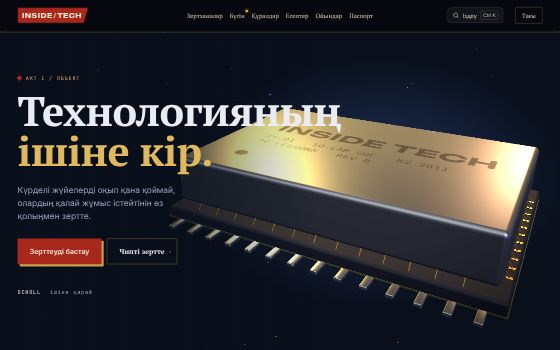
11 зертхана
Ұсынылатын рет: архитектура мен алгоритмдер қалғанының негізі. Әр зертханада 10-15 сабақ, әр сабақта дәріс, тест және 3D симуляция.
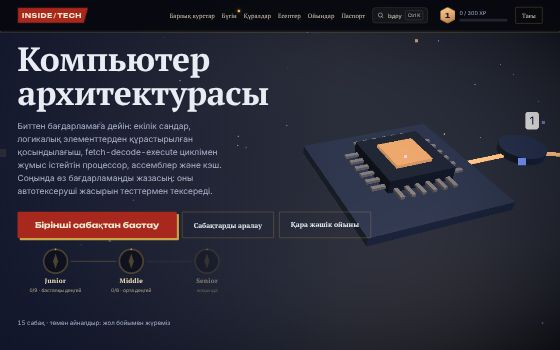
1Компьютер архитектурасы15 сабақ · ≈6 сағат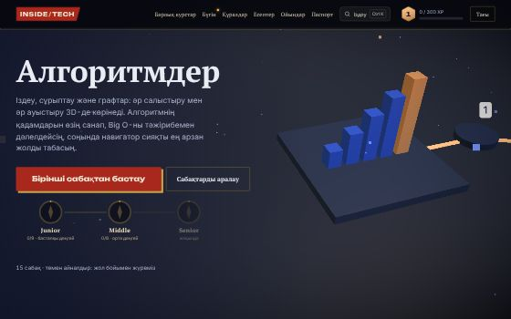
2Алгоритмдер15 сабақ · ≈6 сағат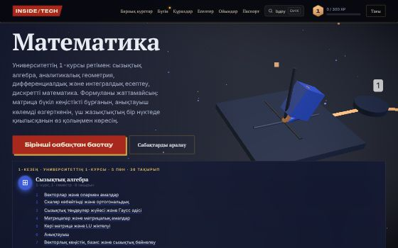
3Математика10 сабақ · ≈4 сағат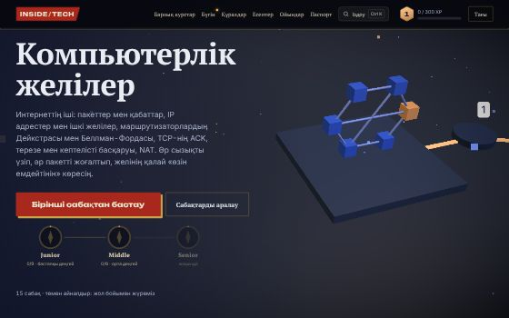
4Компьютерлік желілер15 сабақ · ≈6 сағат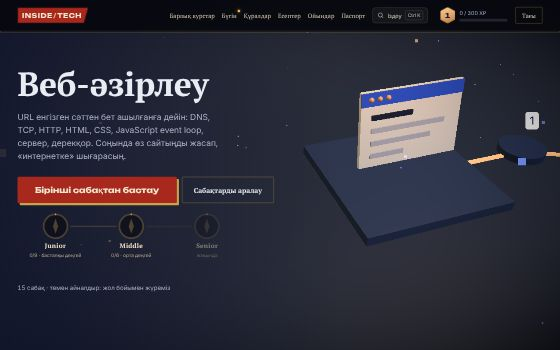
5Веб-әзірлеу15 сабақ · ≈5 сағат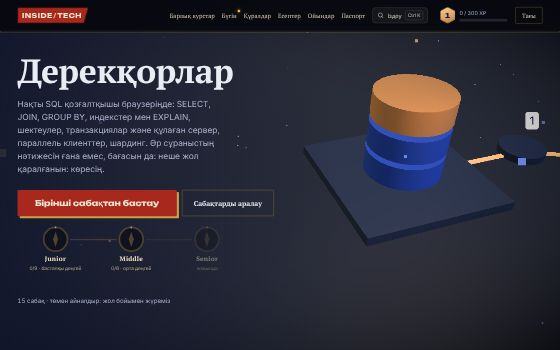
6Дерекқорлар15 сабақ · ≈6 сағат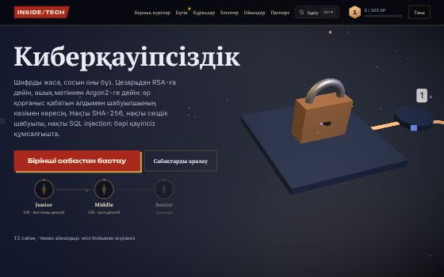
7Киберқауіпсіздік15 сабақ · ≈5 сағат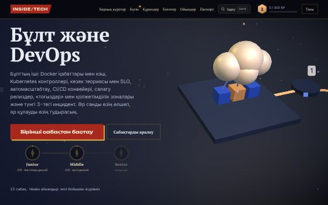
8Бұлт және DevOps15 сабақ · ≈5 сағат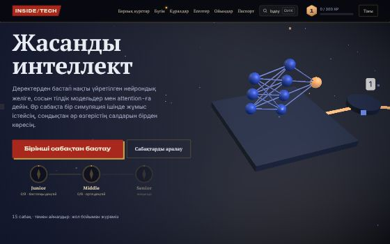
9Жасанды интеллект15 сабақ · ≈5 сағат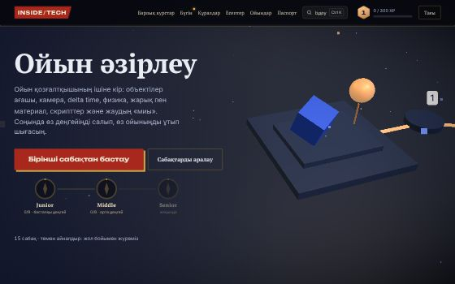
10Ойын әзірлеу15 сабақ · ≈5 сағат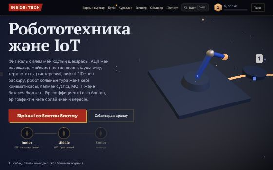
11Робототехника және IoT15 сабақ · ≈5 сағат
Ойындар
Оқығаныңды ойында қолдан: экшн ойындар, аралдар әлемі және алдымен ойлауды талап ететін жұмбақтар.
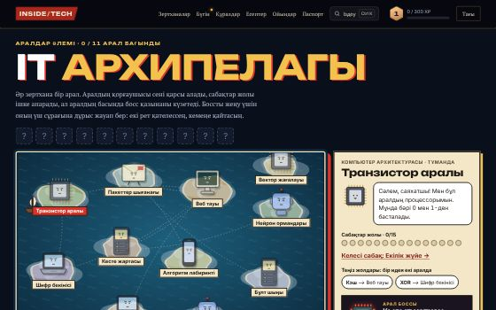
IT архипелагы11 арал - 11 зертхана. Аралдың қорғаушысы сабаққа бастайды, ал басында босс үш сұрақпен қазынаны күзетеді.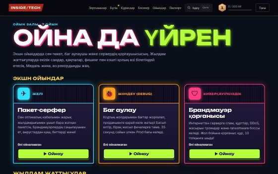
Ойын залыПакет-серфер, Баг аулау, Брандмауэр қорғанысы және екілік сан, қақпа, фишинг, кэш бойынша жылдам жаттығулар.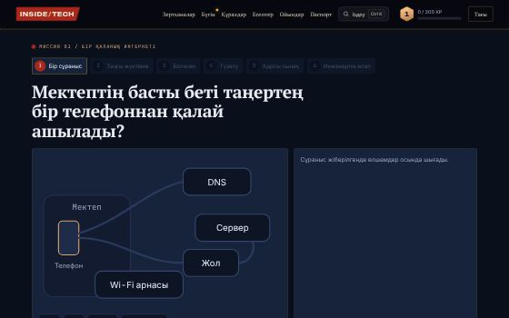
Миссия: бір қаланың интернетіМектептің басты беті таңертең бір телефоннан қалай ашылады? Сұранысты өзің жіберіп, кешігуді өлше.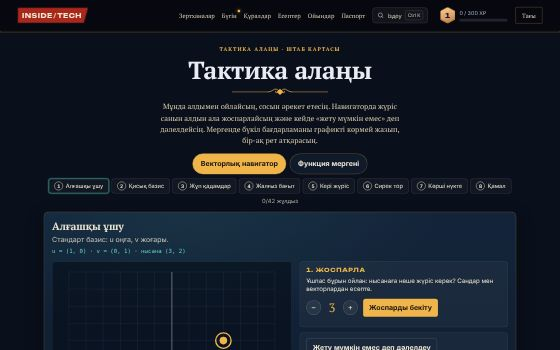
Тактика алаңыАлдымен ойла, сосын әрекет ет: навигаторда жүрісті жоспарла, мергенде бағдарламаны бір-ақ рет атқар.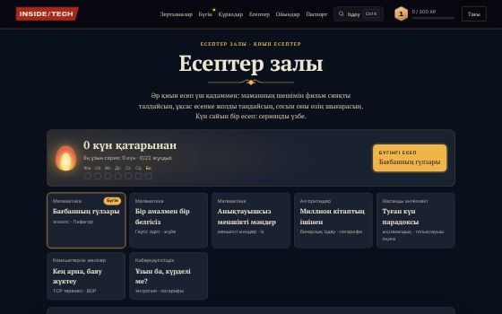
Есептер залыӘр қиын есеп үш қадам: маманның шешімін талда, ұқсас есепке жол таңда, сосын өзің шығар.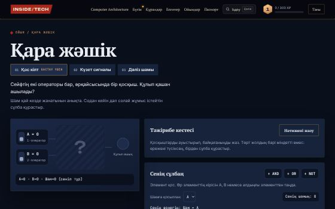
Қара жәшікСейфтің құлпы қашан ашылады? Жасырын ережені тап та, дәл солай жұмыс істейтін сұлба құр.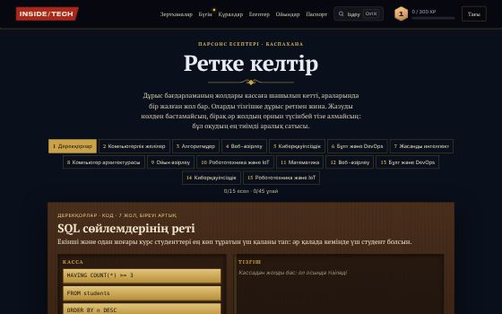
Ретке келтірШашылған код жолдарын дұрыс ретпен жина. Араларында бір жалған жол бар.
Комикстер мен оқиғалар
Әр ұғымның артында бір өмірлік жағдай бар: комикс, интерактивті фильм, газет.
- Комикс кітапханасыСайттағы барлық комикс пен кино-комикс: зертханалардың алғашқы сабақтары, математика, «Қалай оқу керек?».
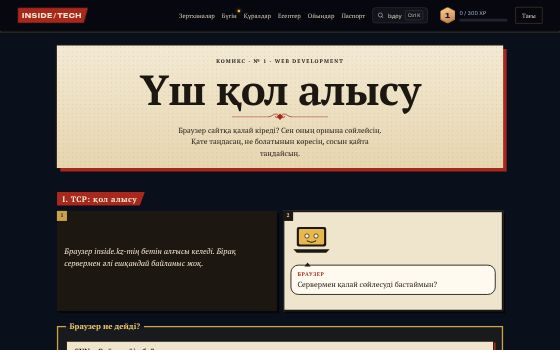
Комикс: Үш қол алысуБраузер сайтқа қалай кіреді? TCP, TLS және HTTP: сен браузердің орнына сөйлейсің.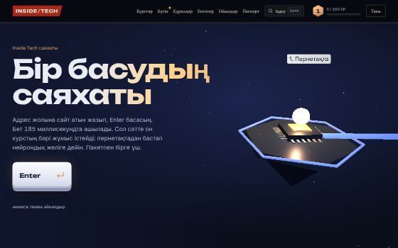
Бір басудың саяхатыПерне басылғаннан экранда әріп пайда болғанға дейінгі жол: фильмнің ішінде сұрақтар.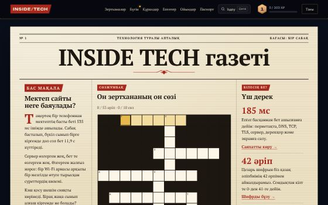
INSIDE TECH газеті, № 1Технология туралы апталық: бір беттің 535 миллисекунд пен 11,9 секунд арасындағы оқиғасы.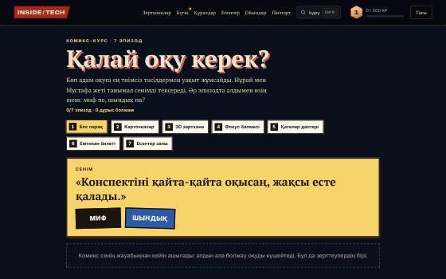
Қалай оқу керек?Нұрай мен Мустафа оқу туралы жеті танымал сенімді тексереді: миф пе, шындық па?
Оқу құралдары
Есте сақтау мен назарға арналған құралдар. Әрқайсысы оқу туралы бір ғылыми нәтижеге сүйенеді.
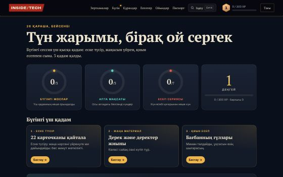
БүгінБүгінгі сессия үш қысқа қадам: еске түсір, жаңасын үйрен, қиын есеппен сына.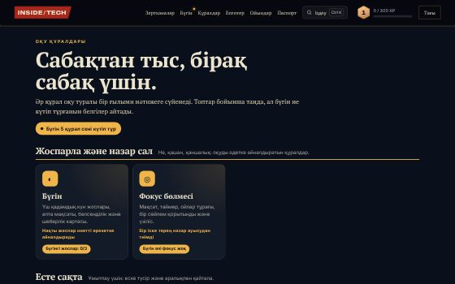
Барлық оқу құралдарыҚұралдардың бәрі бір бетте, топтарымен. Бүгін не күтіп тұрғанын белгілер айтады.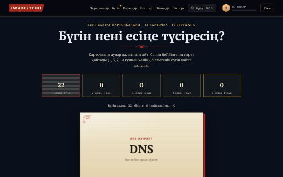
Есте сақтау карточкаларыАралықпен қайталау: білгенің 1, 3, 7, 14 күннен кейін қайтады, білмегенің бүгін қайта шығады.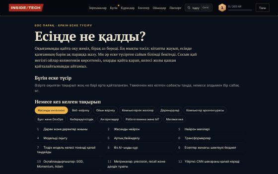
Бос парақКітапты жауып, есіңде қалғанның бәрін жаз. Қай негізгі ой келмегенін көрсетеміз.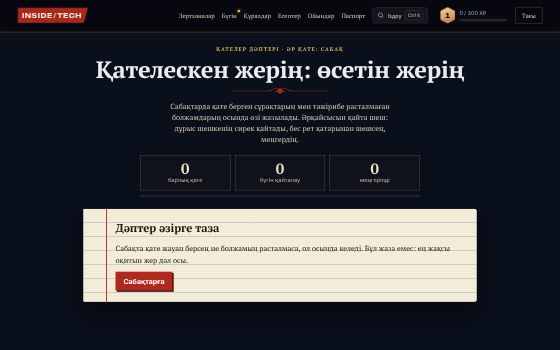
Қателер дәптеріҚате берген сұрақтарың өзі жазылады. Бес рет қатарынан дұрыс шешсең, меңгердің.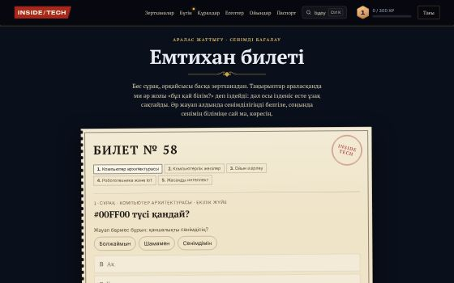
Емтихан билетіБес сұрақ бес түрлі зертханадан. Әр жауаптың алдында сенімділігіңді белгіле.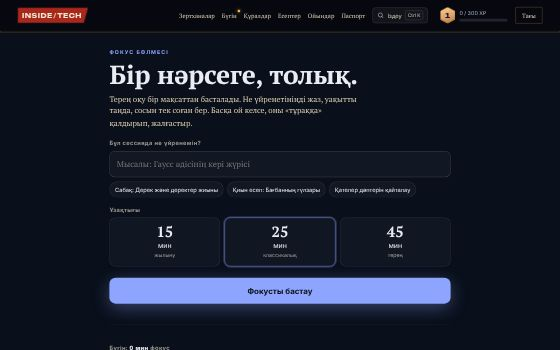
Фокус бөлмесіБір мақсат, бір таймер. Басқа ой келсе, оны «тұраққа» қалдырып, жалғастыр.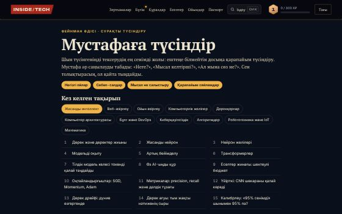
Мустафаға түсіндірФейнман әдісі: Мустафа «Неге?», «Мысал келтірші?» деп түсіндірмеңдегі әр саңылауды табады.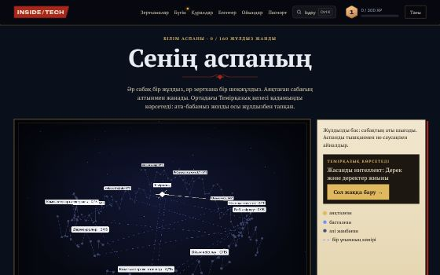
Білім аспаныӘр сабақ бір жұлдыз, әр зертхана бір шоқжұлдыз. Темірқазық келесі қадамды көрсетеді.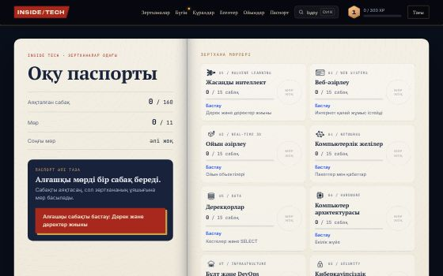
Оқу паспортыЗертханалар одағының паспорты: әр аяқталған сабақ бір мөр басады.
Мамандық және автор
Қай IT мамандығы саған жақын екенін біл, сосын өз сабағыңды жаса.
Барлық 160 сабақ
Сабақтың беті - толық дәріс пен тест; «3D симуляцияны ашу» батырмасы сол сабақты INSIDE TECH қолданбасында ашады. Прогресс екеуінде ортақ.
1Компьютер архитектурасы Computer Architecture
CPU, жады және екілік сандар
15 сабақ · ≈6 сағат · 3D беті
- Екілік жүйеBinaryКомпьютер тек 0 мен 1-ді біледі. 8 бит, разряд салмақтары және он алтылық жазу.≈15 мин · 3 қадам · 6 сұрақ
- Екілік арифметикаBinary ArithmeticТасымалмен қосу, толып кету және теріс сандар: two's complement.≈20 мин · 3 қадам · 6 сұрақ
- Логикалық элементтерLogic GatesAND, OR, NOT, XOR және NAND: транзисторлардан ойлауға дейін.≈15 мин · 2 қадам · 4 сұрақ
- Қосындылағыш құрастыруBuilding an AdderЭлементтерден қосындылағыш құрастыр: компьютер санауды осылай үйренеді.≈25 мин · 3 қадам · 6 сұрақ
- ПроцессорThe CPUFetch → decode → execute: процессор бір нұсқауды қалай орындайды.≈20 мин · 3 қадам · 6 сұрақ
- АссемблерAssemblyӨз бағдарламаңды жаз: автотексеруші оны басқа деректермен де іске қосады.≈30 мин · 2 қадам · 4 сұрақ
- ЖадMemoryАдрестер, LOAD/STORE және жадқа қатынаудың бағасы.≈25 мин · 2 қадам · 4 сұрақ
- Кэш және локалдылықCaches & LocalityБір деректі әр түрлі ретпен оқу 4 есе баяу болуы мүмкін. Неге?≈25 мин · 3 қадам · 6 сұрақ
- Есептер жинағы: биттен бағдарламағаProblem Set: биттен бағдарламағаТеріс сан, тек NAND-тан схема, көбейту бағдарламасы және кэш бюджеті.≈45 мин · 4 қадам · 8 сұрақ
- Конвейер және қақтығыстарPipelining & HazardsБес сатылы конвейер: бір уақытта бес нұсқаулық, тәуелділік кідірісі, forwarding және нұсқаулықтарды қайта реттеу.≈25 мин · 2 қадам · 6 сұрақ
- Тармақты болжауBranch PredictionПроцессор тармақтың нәтижесін алдын ала болжайды: 1 биттік және 2 биттік болжағыш, сұрыпталған және кездейсоқ деректер.≈20 мин · 2 қадам · 6 сұрақ
- Кэштің ассоциативтілігіCache AssociativityКэште бос орын бар, бірақ бәрібір miss: сәйкестік (conflict) кідірістері, жиындар және LRU.≈25 мин · 2 қадам · 6 сұрақ
- Виртуал жад және TLBVirtual Memory & the TLBӘр бағдарлама өз «адрес кеңістігін» көреді. Аудармаға кететін уақыт, TLB және үлкен беттер.≈25 мин · 2 қадам · 6 сұрақ
- Жылжымалы үтір: неге 0.1 + 0.2 ≠ 0.3Floating Point: Why 0.1 + 0.2 ≠ 0.3Компьютер бөлшекті екілік жүйеде жуықтап сақтайды. Дөңгелектеу, жиналатын қате, float32-нің шегі және Kahan қосындысы.≈25 мин · 2 қадам · 6 сұрақ
- Көп ядро: кэш үйлесімділігі және жалған ортақтасуMulticore: Cache Coherence & False SharingЕкі ядро бір-біріне тиіспейтін екі санауышпен жұмыс істейді, бірақ бір ядродан 39 есе баяу. Кэш жолдары, MESI когеренттігі және padding.≈20 мин · 2 қадам · 4 сұрақ
2Алгоритмдер Algorithms
Графтар мен сұрыптауды қадаммен бақыла
15 сабақ · ≈5.9 сағат · 3D беті
- ІздеуSearchingСызықтық және екілік іздеу: n қадам мен log₂n қадамның айырмашылығы.≈20 мин · 3 қадам · 6 сұрақ
- Көпіршікті сұрыптауBubble SortКөршілерді салыстырып ауыстыру. Салыстырулар санын өзің санап, формуламен тексер.≈20 мин · 3 қадам · 6 сұрақ
- Таңдау және кірістіру арқылы сұрыптауSelection & InsertionЕкі басқа идея, бір O(n²). Бірақ «жақсы» деректерде олардың мінезі мүлде басқа.≈20 мин · 3 қадам · 6 сұрақ
- Big O: өсу жылдамдығыBig OУақытты емес, қадамдарды өлшейміз. n екі есе өскенде не болады: тәжірибемен.≈25 мин · 3 қадам · 6 сұрақ
- Біріктіріп сұрыптауMerge SortБөліп ал да, жеңе бер: рекурсия, біріктіру және n·log₂n.≈25 мин · 2 қадам · 4 сұрақ
- Жылдам сұрыптауQuicksortPivot, бөлу (partition) және ең нашар жағдайдан қалай құтылу керегі.≈25 мин · 3 қадам · 6 сұрақ
- Графтар: BFS және DFSGraphs: BFS & DFSКезек пен стек: бір ғана құрылымды ауыстырсаң, іздеу мүлде басқаша жүреді.≈25 мин · 3 қадам · 6 сұрақ
- Дейкстра алгоритміDijkstraСалмақты графтағы ең қысқа жол: навигаторлар осылай жұмыс істейді.≈25 мин · 2 қадам · 4 сұрақ
- Есептер жинағы: дұрыс алгоритмді таңдаProblem Set: дұрыс алгоритмді таңдаШектеулі «бюджетпен» сұрыпта, ізде және ең арзан жолды тап.≈35 мин · 3 қадам · 6 сұрақ
- Хэш-кестелерHash TablesКілтті бір қадаммен табу: хэш функция, коллизия, жүктеме коэффициенті және кестенің кеңеюі.≈25 мин · 2 қадам · 4 сұрақ
- Үйме және басымдық кезегіHeaps & Priority QueuesЕң маңыздысы әрдайым жоғарыда: екілік үйме, sift-up, sift-down және O(log n).≈20 мин · 2 қадам · 4 сұрақ
- Динамикалық бағдарламалауDynamic ProgrammingКішкене есептердің жауабын сақтап, үлкенін құрастыру: рюкзак кестесі және ашкөз тәсілдің қатесі.≈30 мин · 2 қадам · 4 сұрақ
- Union-Find: кім кіммен байланысқан?Union-Find: Who Is Connected?Желідегі компьютерлер бір топта ма? Аңғал ағаш тізбекке айналады; жолды сығымдау мен rank оны аласа ұстайды.≈20 мин · 2 қадам · 6 сұрақ
- Топологиялық сұрыптау: тәуелділіктен ретTopological Sort: Order from DependenciesКурстардың алғышарттары, тапсырмалардың тәуелділіктері, пакеттер: қай ретпен орындаймыз және цикл болса не болады.≈20 мин · 2 қадам · 6 сұрақ
- Амортизациялық талдау: өсетін массивAmortized Analysis: The Growing Arraypush неге орташа O(1), бірақ кейде бүкіл массивті көшіреді. Өсу коэффициенті, амортизацияланған баға және жад пен уақыттың айырбасы.≈20 мин · 2 қадам · 4 сұрақ
3Математика Mathematics
Университеттің 1-курсы: векторлар, матрицалар, анализ 3D-де
10 сабақ · ≈4.5 сағат · 3D беті
- Векторлар және олармен амалдарВектор: кеңістіктегі көрсеткі де, сандар тізімі де. Қосу көрсеткілерді тізбектеп жүру, санға көбейту оны созу.≈25 мин · 2 қадам · 4 сұрақ
- Скаляр көбейтінді және ортогональдықЕкі вектордан бір сан: бір бағытта болса оң, перпендикуляр болса нөл, қарама-қарсы болса теріс. Бұрыш пен проекцияның құралы.≈25 мин · 2 қадам · 4 сұрақ
- Сызықтық теңдеулер жүйесі және Гаусс әдісіҮш теңдеу: кеңістіктегі үш жазықтық, ал шешімі олардың қиылысу нүктесі. Белгісіздерді біртіндеп жойып, баспалдаққа келтіру.≈30 мин · 2 қадам · 4 сұрақ
- Матрицалар және матрицалық амалдарМатрица сандар кестесі емес, машина: ол бүкіл кеңістікті бұрады, созады, қисайтады. Бағандары базис векторларының қайда баратынын айтады.≈30 мин · 2 қадам · 4 сұрақ
- Кері матрица және LU жіктелуіA⁻¹ матрицасы A жасаған түрлендіруді болдырмайды. Ол тек A ақпаратты жоғалтпаса бар: кеңістікті жазықтыққа жаншыған матрицаның керісі жоқ.≈25 мин · 2 қадам · 4 сұрақ
- АнықтауышАнықтауыш: матрица көлемді неше есе өзгертетінін айтатын бір сан. Нөл болса, кеңістік жаншылады; теріс болса, айнадай аударылады.≈25 мин · 2 қадам · 4 сұрақ
- Векторлық кеңістік, базис және сызықтық бейнелеуБазис: бүкіл кеңістікті құрастыруға жететін ең аз кірпіштер. Бір нүктенің координаталары базиске байланысты, ал тәуелді векторлар кеңістікті толтыра алмайды.≈25 мин · 2 қадам · 4 сұрақ
- Меншікті мәндер мен меншікті векторларМатрица көп векторды бұрады, бірақ кейбір ерекше бағыттарды тек созады. Сол бағыттарды өз көзіңмен табу: Av = λv.≈30 мин · 2 қадам · 4 сұрақ
- Шеңбер және эллипсЭллипс: екі фокусқа дейінгі қашықтықтар қосындысы тұрақты нүктелер. Бау мен екі қазықпен сызылады, ал эксцентриситет оның қаншалық созылғанын айтады.≈25 мин · 2 қадам · 4 сұрақ
- Гипербола және параболаШеңбер, эллипс, парабола, гипербола: бәрі бір қос конустың жазықтықпен қималары. Қайсысы шығатынын жазықтықтың көлбеуі шешеді.≈30 мин · 2 қадам · 4 сұрақ
4Компьютерлік желілер Computer Networks
DNS, TCP және пакеттердің маршруты
15 сабақ · ≈5.5 сағат · 3D беті
- Пакеттер мен қабаттарPackets & LayersҮлкен хабар кішкене пакеттерге бөлінеді, әр қабат өз тақырыбын қосады.≈15 мин · 2 қадам · 4 сұрақ
- IP-адрестер және ішкі желілерIP Addresses & Subnets32 бит, маска және CIDR: адрестің қай бөлігі: желі, қайсысы: құрылғы.≈20 мин · 2 қадам · 4 сұрақ
- МаршруттауRoutingМаршрутизаторлар пакетті ең арзан жолмен жібереді: және сызық үзілсе, айналып өтеді.≈20 мин · 3 қадам · 6 сұрақ
- Қашықтық векторыDistance VectorЕшкім бүкіл картаны білмейді: көршілер бір-біріне айтып, кестелер біртіндеп дұрысталады.≈20 мин · 2 қадам · 4 сұрақ
- Сенімді жеткізуReliable DeliveryЖелі пакеттерді жоғалтады. TCP оларды ACK, таймер және қайта жіберу арқылы жеткізеді.≈20 мин · 2 қадам · 4 сұрақ
- Жылжымалы терезеSliding WindowАрнаны толтыру: bandwidth-delay product және терезе өлшемі.≈20 мин · 2 қадам · 4 сұрақ
- Кептелісті басқаруCongestion ControlИнтернет құламауы үшін: slow start, AIMD «ара тісі», Tahoe мен Reno.≈20 мин · 2 қадам · 4 сұрақ
- NAT: адрес аударуNATБір ашық IP артында жүздеген құрылғы: адрес аудару кестесі.≈15 мин · 2 қадам · 4 сұрақ
- Есептер жинағы: желі инженеріProblem Set: желі инженеріОртақ ішкі желі, мақсатты құны бар маршрут және жоғалтуы бар арнадағы терезе.≈40 мин · 3 қадам · 6 сұрақ
- DNS: рекурсия, кэш және TTLDNS: Recursion, Cache & TTLРезолвер атауды түбірден бастап іздейді, жауапты TTL бойы есте сақтайды: жылдамдық пен ескі жауаптың бағасы.≈25 мин · 2 қадам · 6 сұрақ
- TCP күйлер машинасыTCP State MachineБайланыстың 11 күйі: SYN мен RST, жоғалған сегмент пен таймер, FIN және TIME_WAIT.≈25 мин · 3 қадам · 9 сұрақ
- ARP және Ethernet коммутациясыARP & Ethernet SwitchingIP адрестен MAC адреске: ARP сұрауы, коммутатордың үйренуі және шлюз.≈25 мин · 3 қадам · 9 сұрақ
- TCP, QUIC және UDP: кезек басындағы бөгетTCP, QUIC & UDP: Head-of-Line BlockingБір жоғалған пакет бүкіл бетті тоқтатады ма? Тәртіп кепілінің бағасы, QUIC-тің ағындары және дауысқа неге UDP.≈20 мин · 2 қадам · 6 сұрақ
- MTU, бөлшектеу және PMTU «қара тесіктері»MTU, Fragmentation & PMTU Black HolesПакет туннельге сыймаса не болады: бөлшектеу, DF белгісі, ICMP «тым үлкен» хабары және ICMP бұғатталғанда пайда болатын қара тесік.≈25 мин · 2 қадам · 4 сұрақ
- Буфер ісінуі: роутер тым көп есте сақтағандаBufferbloat: When the Router Remembers Too MuchБіреу үлкен файл жүктесе, неге бейнеқоңырау қатып қалады? Роутер буфері, TCP кезекті неге толтырады және буфердің дұрыс өлшемі.≈20 мин · 2 қадам · 4 сұрақ
5Веб-әзірлеу Web Development
Request серверден браузерге дейін қалай жүретінін көр
15 сабақ · ≈4.8 сағат · 3D беті
- Интернет қалай жұмыс істейдіHow Internet WorksURL енгізгеннен бет ашылғанға дейін: DNS, TCP, TLS, HTTP: әр қадам уақытымен.≈12 мин · 4 қадам · 8 сұрақ
- HTML және DOMHTML & DOMHTML мәтінінен браузер DOM ағашын құрады. Кодты өзгерт: 3D ағаш бірден өзгереді.≈12 мин · 4 қадам · 8 сұрақ
- CSS және бет құрылымыCSS & LayoutBox model қабаттарын 3D-де ажырат, box-sizing-ті түсін, flexbox-пен орналастыр.≈14 мин · 4 қадам · 8 сұрақ
- JavaScript: оқиғалар цикліJavaScriptCall stack, Web API, microtask және task кезектері: JavaScript бір ағында қалай «көп іс» істейді.≈15 мин · 4 қадам · 8 сұрақ
- Сервер жағы және APIBackend & APIСервер маршруттары, статус кодтары, авторизация және деректерді жіберу.≈15 мин · 4 қадам · 8 сұрақ
- Веб-қолданбадағы дерекқорDatabasesSQL арқылы деректерді оқу, қосу, өзгерту, өшіру және индекстің жылдамдыққа әсері.≈15 мин · 3 қадам · 6 сұрақ
- Ақау іздеуDebuggingshop.kz бұзылған: DNS, 404, 500 және баяу сұрауды тауып, түзет.≈18 мин · 4 қадам · 8 сұрақ
- Сайтты жариялауDeployӨз бетіңді жаз, доменге байла, серверге шығар және кэш мәселесін шеш.≈18 мин · 4 қадам · 8 сұрақ
- Есептер жинағы: full-stackProblem Set: full-stackSQL сұраныстар, өз API-ің және event loop болжамы. Тек спецификация мен автотексеруші.≈40 мин · 3 қадам · 6 сұрақ
- HTTP кэштеу: max-age және ETagHTTP Caching: max-age & ETagКэш қашан көмектеседі, қашан ескіреді, және «өзгерді ме?» деп сұрау неге бүкіл бетті қайта жүктегеннен арзан.≈25 мин · 2 қадам · 4 сұрақ
- 401 пен 403: тұлға және рөлдер401 vs 403: Identity & Roles«Сен кімсің?» мен «саған рұқсат бар ма?» деген екі түрлі сұрақ және олардың екі түрлі жауабы.≈20 мин · 2 қадам · 4 сұрақ
- Идемпотенттілік: POST пен PUTIdempotency: POST vs PUTЖелі үзіліп, сұраныс қайта жіберілсе не болады? Қайталауға қауіпсіз сұраныстар және қауіпті сұраныстар.≈20 мин · 2 қадам · 4 сұрақ
- CORS: жауапты кім оқи аладыCORS: Who May Read the AnswerБөтен сайттың скрипті API-ге сұраныс жібере алады, бірақ жауапты оқи ала ма? Origin, preflight және CORS-тың нені қорғамайтыны.≈25 мин · 2 қадам · 6 сұрақ
- Сұраныс жиілігін шектеу: 429 және Retry-AfterRate Limiting: 429 & Retry-AfterБір клиент серверді сұраныспен көміп тастамауы үшін: сырғымалы терезе, 429 жауабы, Retry-After және неге шек әр клиентке бөлек.≈20 мин · 2 қадам · 4 сұрақ
- Сұраныс сарқырамасы: await, Promise.all және топтауRequest Waterfalls: await, Promise.all & BatchingБір бет он сұраныс жібереді. Оларды қалай күткенің беттің жылдамдығын бірнеше есе өзгертеді: тәуелділік, параллельдік, қосылым шегі және пакеттеу.≈20 мин · 2 қадам · 4 сұрақ
6Дерекқорлар Databases
Индекстер, транзакциялар, query optimizer
15 сабақ · ≈5.7 сағат · 3D беті
- Кестелер және SELECTTables & SELECTКесте, жол, баған, кілт. SELECT, WHERE, ORDER BY: деректерге сұрақ қою.≈15 мин · 2 қадам · 4 сұрақ
- JOIN: кестелерді біріктіруJOINДеректер бірнеше кестеге бөлінген. JOIN оларды кілттер арқылы қайта жинайды.≈20 мин · 2 қадам · 4 сұрақ
- GROUP BY: топтауGROUP BYCOUNT, SUM, AVG және топтау: мыңдаған жолдан бір жауап.≈20 мин · 3 қадам · 6 сұрақ
- ИндекстерIndexes5000 жолды сканерлеу мен 9 жолды табу: B-tree индексі және EXPLAIN.≈20 мин · 3 қадам · 6 сұрақ
- Кілттер мен шектеулерKeys & ConstraintsДерекқор қате деректерді өзі қабылдамайды: PRIMARY KEY, NOT NULL, FOREIGN KEY.≈15 мин · 2 қадам · 4 сұрақ
- ТранзакцияларTransactionsАқша аудару: не бәрі, не ештеңе. ACID және құлаған сервер.≈20 мин · 3 қадам · 6 сұрақ
- Қатарлас қатынауConcurrencyЕкі клиент бір жазбаны өзгертеді. Жоғалған жаңарту және құлыптар.≈20 мин · 2 қадам · 4 сұрақ
- Масштабтау және шардингScaling & ShardingДеректер бір серверге сыймағанда: шардинг, mod N және consistent hashing.≈20 мин · 2 қадам · 4 сұрақ
- Есептер жинағы: дерекқор инженеріProblem Set: дерекқор инженеріАналитикалық сұраныс, баяу сұранысты жылдамдату, қауіпсіз аударым және параллельдік.≈45 мин · 4 қадам · 8 сұрақ
- LEFT JOIN және NULLLEFT JOIN & NULLЖұбы жоқ жолдар қайда кетеді? LEFT JOIN, NULL және «нөл» мен «жоқтың» айырмасы.≈25 мин · 2 қадам · 4 сұрақ
- Ішкі сұраныстарSubqueriesСұрақтың ішіндегі сұрақ: бір мән қайтаратын ішкі сұраныс, IN (SELECT ...) және NOT IN тұзағы.≈25 мин · 2 қадам · 4 сұрақ
- LIKE, BETWEEN, DISTINCT: үлгі, аралық, бірегейлікLIKE, BETWEEN, DISTINCTМәтін үлгісі бойынша іздеу, аралықтар және қайталанбайтын мәндер.≈20 мин · 2 қадам · 4 сұрақ
- Нормализация: бір дерек, бір орынNormalization: One Fact, One PlaceБір дерек бірнеше жерде тұрса, ерте ме, кеш пе, екі түрлі болады. Жаңарту аномалиясы, нормализация және JOIN.≈25 мин · 2 қадам · 6 сұрақ
- Беттеу: OFFSET пен keysetPagination: OFFSET vs KeysetТереңдегі бетті ашу неге баяу, ал лента неге бір жазбаны екі рет көрсетеді. OFFSET-тің бағасы және «осы id-ден кейінгілер» әдісі.≈25 мин · 2 қадам · 4 сұрақ
- Селективтілік және сұраныс жоспарлаушыSelectivity & the Query PlannerИндекс бар, бірақ дерекқор оны қолданбады. Селективтілік, кездейсоқ оқудың бағасы және жоспарлаушы бірнеше индекстің ішінен қайсысын таңдайды.≈25 мин · 2 қадам · 4 сұрақ
7Киберқауіпсіздік Cybersecurity
Шифрлау мен аутентификацияны қорғау зертханасында
15 сабақ · ≈5.4 сағат · 3D беті
- Цезарь шифрыCaesar CipherЕң көне шифр: әріптерді жылжыту. Және оны 42 кілтті тексеріп бұзу.≈15 мин · 3 қадам · 6 сұрақ
- Жиілік талдауыFrequency AnalysisӘріптердің жиілігі шифрды «сатып қояды»: аль-Кинди әдісімен бұзу.≈15 мин · 1 қадам · 2 сұрақ
- XOR және бір реттік блокнотXOR & One-Time PadТеориялық тұрғыдан бұзылмайтын шифр: және оны бұзатын бір қате.≈15 мин · 2 қадам · 4 сұрақ
- ХэштеуHashingSHA-256: кез келген деректің 256 биттік «саусақ ізі».≈20 мин · 3 қадам · 6 сұрақ
- Құпиясөздерді сақтауStoring PasswordsДерекқор ұрланды. Құпиясөздер қалай сақталғанына қарай: не болады?≈20 мин · 3 қадам · 6 сұрақ
- Құпиясөздің беріктігіPassword StrengthЭнтропия: құпиясөздің күші: оның ұзындығы мен әліпбиінің логарифмі.≈15 мин · 3 қадам · 6 сұрақ
- Ашық кілтті криптографияPublic-Key CryptographyRSA: екі кілт: біреуі бәріне ашық, екіншісі тек сенде.≈25 мин · 3 қадам · 6 сұрақ
- Инъекция және XSSInjection & XSSЕң көп тараған веб-шабуылдар: дерек код болып орындалғанда.≈20 мин · 3 қадам · 6 сұрақ
- Есептер жинағы: шабуылшының көзіменProblem Set: шабуылшының көзіменШифрды бұз, блок «қаз», RSA кілтін жікте және кіріс формасын айналып өт.≈45 мин · 4 қадам · 8 сұрақ
- Блоктық шифр режимдері: ECB пен CBCBlock Cipher Modes: ECB vs CBCМықты шифр да дұрыс емес режимде суретті жасыра алмайды: ECB, CBC және IV.≈25 мин · 2 қадам · 6 сұрақ
- Тұтастық: хэш пен HMACIntegrity: Hash vs HMACХэш хабардың өзгермегенін дәлелдемейді, егер оны шабуылшы да есептей алса. HMAC: кілтпен қорғалған тұтастық.≈20 мин · 2 қадам · 6 сұрақ
- Диффи-Хеллман және ортадағы адамDiffie-Hellman & Man in the MiddleАшық арна арқылы ортақ құпия кілт: дискретті логарифм, Ева және ортадағы адам.≈25 мин · 2 қадам · 6 сұрақ
- Сертификаттар және сенім тізбегіCertificates & the Chain of TrustБраузер сайттың шын екенін қалай біледі: сертификат, аралық орталық, түбір және бес түрлі қате.≈25 мин · 2 қадам · 6 сұрақ
- XSS және мазмұн қауіпсіздігі саясаты (CSP)XSS & Content Security PolicyШабуылшы бетке скрипт кіргізді. Енді не? Браузерге «қай скрипт жүре алады» деп айтатын CSP және nonce.≈20 мин · 2 қадам · 6 сұрақ
- Уақыт шабуылдары және тұрақты уақытта салыстыруTiming Attacks & Constant-Time ComparisonСервер «қате» дейді, бірақ қаншалықты тез айтқаны құпияны ашып қояды. Миллиард байқаудың орнына 128 болжам, шуды орташалау және тұрақты уақытты салыстыру.≈20 мин · 2 қадам · 4 сұрақ
8Бұлт және DevOps Cloud & DevOps
Контейнерлер, Kubernetes, CI/CD
15 сабақ · ≈5.2 сағат · 3D беті
- КонтейнерлерContainersОбраз қабаттардан тұрады. Қабаттардың реті жинау уақытын бірнеше есе өзгертеді.≈15 мин · 2 қадам · 4 сұрақ
- ОркестрлеуOrchestrationСен не керегін айтасың, контроллер оны үнемі қалпына келтіреді: desired state.≈15 мин · 2 қадам · 4 сұрақ
- Жүктеме және кешігуLoad & LatencyКезек теориясы: сервер 100% жүктелгенде кешігу шексізге ұмтылады.≈20 мин · 2 қадам · 4 сұрақ
- АвтомасштабтауAutoscalingТәулік бойы жүктеме өзгереді. Автомасштабтау: SLO мен шығын арасындағы тепе-теңдік.≈20 мин · 2 қадам · 4 сұрақ
- CI/CD: автоматты тексеру және шығаруCI/CDӘр өзгеріс автоматты түрде тексеріліп, жиналып, шығарылады: тест құласа, ештеңе шықпайды.≈15 мин · 2 қадам · 4 сұрақ
- Шығару стратегияларыRelease StrategiesЖаңа нұсқада қате бар. Оны неше пайдаланушы көреді: стратегияға байланысты.≈20 мин · 2 қадам · 4 сұрақ
- ҚолжетімділікAvailability«Тоғыздар»: 99.9% мен 99.99%-дың арасы: жылына 8 сағат пен 52 минут.≈20 мин · 2 қадам · 4 сұрақ
- Бақылау: метрикадан түпкі себепкеObservabilityТүнгі 3: сайт баяу. Метрикалар бойынша түпкі себепті тап.≈15 мин · 1 қадам · 2 сұрақ
- Есептер жинағы: SRE кезекшілігіProblem Set: SRE кезекшілігіШығын шегіндегі автомасштабтау, бес тоғыз және қауіпсіз релиз конвейері.≈40 мин · 3 қадам · 6 сұрақ
- Денсаулық тексерісі: readiness және livenessHealth Checks: Readiness & LivenessПроцесс тірі, бірақ дайын емес; процесс тірі, бірақ қатып қалған. Екі түрлі тексеріс, екі түрлі әрекет.≈25 мин · 2 қадам · 6 сұрақ
- Кезектер және кері қысымQueues & BackpressureКезек толқынды жұтады, бірақ уақытты қарызға алады. Шектелген кезек және «қазір емес» деп айту.≈20 мин · 2 қадам · 6 сұрақ
- Жүктемені теңгеру алгоритмдеріLoad Balancing AlgorithmsҮш сервер, біреуі баяу. Кезекпен бөлу, кездейсоқ бөлу және ең бос серверге жіберу.≈20 мин · 2 қадам · 6 сұрақ
- Қайталау, кідіріс және сақтандырғышRetries, Backoff & Circuit BreakersҚайталау көмектесе ме, әлде құлаған қызметті біржола басып тастай ма? Қайталау дауылы, экспоненциалды кідіріс және сақтандырғыш.≈25 мин · 2 қадам · 6 сұрақ
- Кэшке лап қою: single-flight және алдын ала жаңартуCache Stampede: Single-Flight & Refresh-AheadКэш дерекқорды қорғайды, бірақ ыстық кілттің мерзімі біткен секундта бәрі бірден дерекқорға жүгіреді. Сұраныстарды біріктіру және алдын ала жаңарту.≈20 мин · 2 қадам · 4 сұрақ
- Жайлап тоқтату және байланыстарды аяқтауGraceful Shutdown & Connection DrainingӘр deploy-да пайдаланушылар неге қате көреді? SIGTERM, жүктеме балансының кешігуі, preStop және сұраныстарды аяқтап барып тоқтау.≈20 мин · 2 қадам · 4 сұрақ
9Жасанды интеллект AI & Machine Learning
Нейронды өз қолыңмен баптап, желіні нақты үйрет
15 сабақ · ≈5 сағат · 3D беті
- Дерек және деректер жиыныData & DatasetМодель деректен үйренеді. Нүктелерді қосып, белгілеп, train/test-ке бөліп көр.≈10 мин · 4 қадам · 8 сұрақ
- Жасанды нейронArtificial NeuronWeight, bias және activation-ды қолмен баптап, бір нейронмен деректерді бөл.≈12 мин · 4 қадам · 8 сұрақ
- Нейрон желілеріNeural NetworksЖасырын қабаттар қосып, forward propagation сигналдың желі арқылы қалай өтетінін көр.≈12 мин · 4 қадам · 8 сұрақ
- Модельді оқытуModel TrainingНақты gradient descent: learning rate, batch size және epoch-тың әсерін loss графигінен көр.≈15 мин · 4 қадам · 8 сұрақ
- Артық бейімделуOverfittingМодель деректі жаттап алғанда не болатынын көр және оны екі тәсілмен емде.≈15 мин · 4 қадам · 8 сұрақ
- ТрансформерлерTransformersМәтін қалай токенге, токен қалай векторға айналады және attention қалай жұмыс істейді.≈18 мин · 4 қадам · 8 сұрақ
- Тілдік модель келесі токенді қалай таңдайдыLLM InferenceТілдік модель келесі токенді қалай таңдайды: ықтималдықтар, temperature, top-k.≈15 мин · 4 қадам · 8 сұрақ
- Өз AI-ыңды құрBuild Your AIӨз деректеріңді жина, өз модельіңді құр, ең қиын датасетті шеш және модельді экспортта.≈25 мин · 3 қадам · 6 сұрақ
- Есептер жинағы: шектеулі бюджетProblem Set: шектеулі бюджетҮш есеп, үш шектеу. Нұсқаулық жоқ: тек спецификация және автотексеруші.≈40 мин · 3 қадам · 6 сұрақ
- Оңтайландырғыштар: SGD, Momentum, AdamOptimizers: SGD, Momentum, AdamҰзын тар шұңқырда градиенттік түсу: қадам өлшемінің тар терезесі, импульс және бейімделетін қадам.≈25 мин · 2 қадам · 6 сұрақ
- Метрикалар: precision, recall және дәлдік тұзағыMetrics: Precision, Recall & the Accuracy Trap200 адам, 10-ы науқас. 95% дәлдік ештеңе білдірмеуі мүмкін: precision, recall және шекті таңдау.≈20 мин · 2 қадам · 6 сұрақ
- Үйірткі: CNN шекараны қалай көредіConvolution: How a CNN Sees Edges3×3 ядро суреттің үстімен жылжиды: бұлыңғырлау, шекараларды табу және өз сүзгіңді құру.≈25 мин · 2 қадам · 6 сұрақ
- Дерек дрейфі: дүние өзгергендеData Drift: When the World MovesМодель өзгерген жоқ, ал дүние өзгерді. Дәлдіктің білдірмей құлауы, оны бақылау және қайта үйрету.≈20 мин · 2 қадам · 6 сұрақ
- Дерек ағуы: тым жақсы нәтиженің сырыData Leakage: Too Good to Be TrueТестте 98%, өмірде 59%. Жауапты алдын ала біліп қойған белгі, бір адамның train-де де, test-те де болуы және тексерудің өмірге ұқсауы неге маңызды.≈25 мин · 2 қадам · 4 сұрақ
- Калибрлеу: «95% сенімді» шынымен 95% па?Calibration: Is 95% Sure Really 95%?Модель «99% сенімдімін» дейді, бірақ ондай жағдайлардың 86%-ында ғана дұрыс. Сенімділік диаграммасы, ECE және температуралық масштабтау.≈20 мин · 2 қадам · 4 сұрақ
10Ойын әзірлеу Game Development
Game loop, физика және камера ішінен
15 сабақ · ≈4.6 сағат · 3D беті
- Ойын объектілеріGame ObjectsСахна ағашы: әр объектінің өз координатасы бар және ол ата-анасына қатысты.≈12 мин · 3 қадам · 6 сұрақ
- КамераCameraПерспектива мен ортографика, FOV, ойыншының соңынан еретін камера.≈10 мин · 3 қадам · 6 сұрақ
- Ойын цикліGame LoopDelta time: неге ойын әр компьютерде бірдей жылдамдықта жүруі керек.≈10 мин · 2 қадам · 4 сұрақ
- ФизикаPhysicsГравитация, серпімділік, соқтығысу және жылдам объектілердің қабырғадан «өтіп кетуі».≈15 мин · 4 қадам · 8 сұрақ
- ГрафикаGraphicsЖарық түрлері, материалдар және shading: пиксель түсі қалай есептеледі.≈10 мин · 2 қадам · 4 сұрақ
- Сценарий жазуScriptingОйын ережелерін «ҚАШАН … ОНДА …» түрінде жаз: оқиға → әрекет.≈15 мин · 3 қадам · 6 сұрақ
- Ойын логикасыGame LogicЖаудың «миы»: күйлер машинасы: күзет, қуу, оралу.≈15 мин · 2 қадам · 4 сұрақ
- Өз ойыныңды жасаCreate Your GameӨз деңгейіңді сал, ережелерді жаз және өз ойыныңды ұтып шық.≈25 мин · 3 қадам · 6 сұрақ
- Есептер жинағы: физика және деңгей дизайныProblem Set: физика және деңгей дизайныФизикалық параметрлерді есептеп тап, BFS-пен тексерілетін деңгей сал және оны ұтып шық.≈40 мин · 3 қадам · 6 сұрақ
- Жол табу: BFS, Дейкстра, A*Pathfinding: BFS, Dijkstra, A*Жау батпақты айналып өтуі керек пе? Қадам саны, жол бағасы және эвристика.≈25 мин · 2 қадам · 6 сұрақ
- Жаудың миы: күйлер машинасыEnemy AI: State MachinesКүзетші: патруль, қуу, шабуыл. Бір шекара жыпылықтау береді, екі шекара (гистерезис) оны тоқтатады.≈20 мин · 2 қадам · 6 сұрақ
- Соқтығысу: тормен кең фазаCollision: Broad Phase with a Grid1000 дене: жарты миллион жұп. Кеңістіктік тор тексерістерді жүздеген есе азайтады.≈20 мин · 2 қадам · 6 сұрақ
- Объект пулы және қоқыс жинаушы кідірісіObject Pooling & GC SpikesОйын неге кенет «қатады»? Жаңа объектілер, қоқыс жинаушы және объектілерді қайта қолдану.≈20 мин · 2 қадам · 6 сұрақ
- Тұрақты қадамды физикаFixed Timestep PhysicsНеге ойынның физикасы әлсіз компьютерде «жарылады»? Кадр уақытымен қадам, интегратор және тұрақты қадам аккумуляторы.≈20 мин · 2 қадам · 6 сұрақ
- Туннельдеу және үздіксіз соқтығысу тексерісіTunneling & Continuous Collision DetectionОқ қабырғаға тимей, арғы жағынан шығады. Дискретті тексерудің шегі, ішкі қадамдардың бағасы және траекторияны тұтас тексеретін CCD.≈20 мин · 2 қадам · 4 сұрақ
11Робототехника және IoT Robotics & IoT
Сенсорлар мен контроллерлер симуляциясы
15 сабақ · ≈5.3 сағат · 3D беті
- Датчиктер және АЦПSensors & ADCСенсор кернеу береді, микроконтроллер сан көреді. Арадағы АЦП-ның разряды дәлдікті анықтайды.≈15 мин · 2 қадам · 4 сұрақ
- Дискреттеу және бүркенуSampling & AliasingСигналды сирек өлшесең, ол басқа жиілікке «бүркенеді». Найквист шегі.≈15 мин · 2 қадам · 4 сұрақ
- Шу және сүзгілеуNoise & FilteringШуды сүзу: әрдайым кешігу бағасымен. Экспоненциалды орташа және оның α параметрі.≈15 мин · 2 қадам · 4 сұрақ
- Қосу/өшіру реттегішіOn/Off ControlТермостат: қосу/өшіру реттегіші және гистерезистің не үшін керек екені.≈15 мин · 2 қадам · 4 сұрақ
- PID реттегішPID ControlЛифтті дәл 1 метрге көтер: пропорционал, интеграл және дифференциал құрамдар.≈25 мин · 2 қадам · 4 сұрақ
- Робот қолының кинематикасыRobot Arm KinematicsТура кинематика: бұрыштардан нүктеге. Кері кинематика: нүктеден бұрыштарға: және оның екі шешімі.≈20 мин · 2 қадам · 4 сұрақ
- Датчиктерді біріктіру: Калман сүзгісіSensor FusionОдометрия дрейфтейді, GPS шулы. Калман сүзгісі екеуінен де дәлірек баға береді.≈25 мин · 2 қадам · 4 сұрақ
- MQTT және қуатMQTT & PowerҚұрылғылар хабарды тақырыптарға жариялайды. Әр хабар: батареядан алынған заряд.≈20 мин · 2 қадам · 4 сұрақ
- Есептер жинағы: ауыл шаруашылығы роботыProblem Set: Ауыл шаруашылығы роботыАуыр жүкті реттеу, шулы GPS-пен навигация және бір жыл жұмыс істейтін сенсор.≈45 мин · 3 қадам · 6 сұрақ
- PWM: моторды басқаруPWM & Motor ControlЦифрлық пин тек 0 не 12 вольт береді. Импульстің ені (PWM) моторға 6 вольтты қалай «көрсетеді»?≈20 мин · 2 қадам · 6 сұрақ
- Тізбекті шиналар: UART, I2C, SPISerial Buses: UART, I2C, SPIМикроконтроллер датчиктермен үш тілде сөйлеседі: жылдамдығы, сымдары және жиі қателері.≈25 мин · 2 қадам · 6 сұрақ
- Нақты уақыттағы жоспарлауReal-Time SchedulingБасқару циклі әр 10 мс сайын орындалуы керек. Ұзақ лог жазу оны бұзбауы үшін: басымдықтар мен ығыстыру.≈25 мин · 2 қадам · 6 сұрақ
- Датчиктерді біріктіру: толықтауыш сүзгіSensor Fusion: Complementary FilterГироскоп ығысады, акселерометр шулы. Екеуінен бір дұрыс бұрыш: комплементарлы сүзгі.≈20 мин · 2 қадам · 6 сұрақ
- Батырманың дірілін басу (debounce)Debouncing a ButtonБір басу: он бес басу? Механикалық контактінің дірілі, debounce терезесі және оның бағасы.≈15 мин · 2 қадам · 6 сұрақ
- Watchdog таймері: қатып қалудан шығуWatchdog Timers: Recovering from a HangДалада тұрған датчик қатып қалды, ал оған ешкім бара алмайды. Watchdog таймері, оны қай жерде тамақтандыру керек және жиі кездесетін тұзақ.≈20 мин · 2 қадам · 4 сұрақ
Материалдар AO17 командасының INSIDE TECH 3D платформасынан алынған. AO17 нұсқасында атаулар қазақша, Ұстаз кейіпкері жоқ. Үшінші тарап кітапханаларының лицензиялары: THIRD-PARTY-NOTICES.txt.